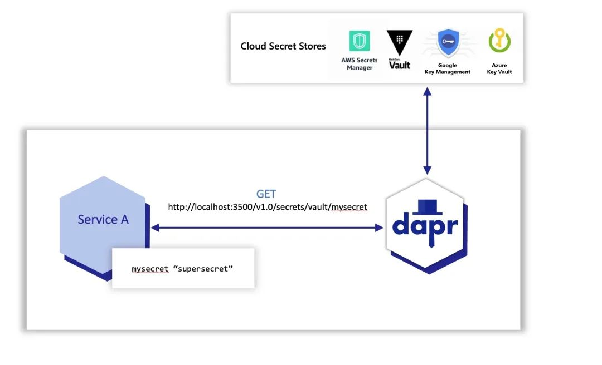
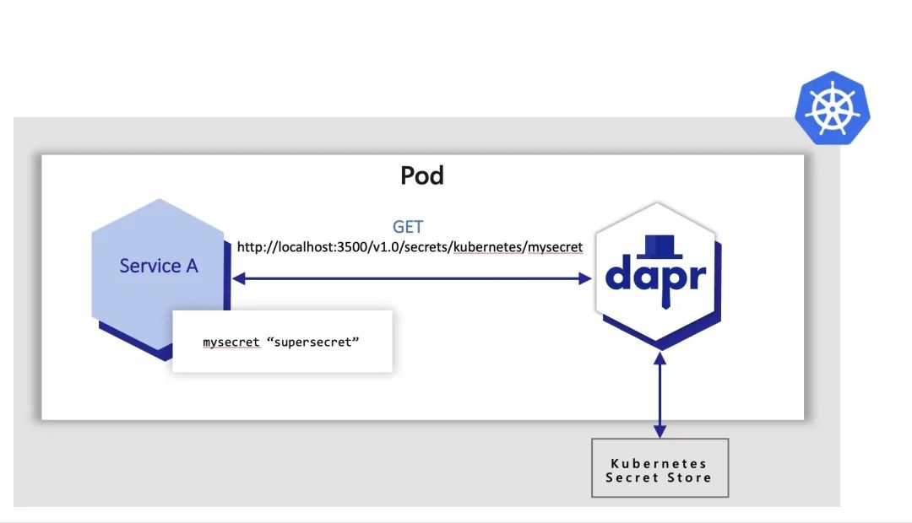

6 Dapr 入门教程之密钥存储
应用程序通常通过使用专用的 Secret 存储来存储敏感信息，如密钥和 Token，用于与数据库、服务和外部系统进行身份验证的 Secret 等。
通常这需要涉及到设置一个 Secret 存储，如 Azure Key Vault、Hashicorp Vault 等，并在那里存储应用程序级别的私密数据。
为了访问这些 Secret 存储，应用程序需要导入 Secret 存储的 SDK，并使用它来访问私密数据，这可能需要相当数量的代码，这些代码与应用程序的实际业务领域无关，因此在可能使用不同供应商特定的 Secret 存储的多云场景中，这将成为更大的挑战。
为了使开发者更容易使用应用程序的私密数据，Dapr 有一个专门的 Secret 构建块 API，允许开发者从 Secret 存储中获取私密数据。使用 Dapr 的 Secret 存储构建块通常涉及以下内容。
- 为特定的 Secret 存储解决方案设置一个组件。
- 在应用程序代码中使用 Dapr 的 Secret API 来检索私密数据。
- (可选)在 Dapr 组件文件中引用 Secret。
默认情况下，Dapr 在 Kubernetes 模式下通过 Helm 或 dapr init -k 部署的时候，启用一个内置的 Kubernetes Secret 存储，如果你使用另一个 Secret 存储，你可以使用 disable-builtin-k8s-secret-store 设置禁用 Dapr Kubernetes Secret 存储。
应用程序代码可以调用 Secret 构建块 API 从 Dapr 支持的 Secret 存储中检索私密数据，这些 Secret 存储可以在你的代码中使用。
例如，下图显示了一个应用程序从配置的云 Secret 存储库中的一个名为 vault 的 Secret 存储库中请求名为 mysecret 的私密数据。

应用程序可以使用 secrets API 来访问来自 Kubernetes Secret 存储的私密数据。在下面的例子中，应用程序从 Kubernetes Secret 存储中检索相同的 mysecret。

本地环境使用 Secrets
同样我们以 quickstarts 仓库进行说明。
git clone [-b <dapr_version_tag>] https://github.com/dapr/quickstarts.git
cd quickstarts
然后定位到 secretstore 目录下面的 node 文件夹：
$ cd tutorials/secretstore/node
在 app.js 中是一个简单的 Express 应用，它暴露了一些路由和处理程序，我们可以先查看下该文件中的如下内容：
const daprPort = process.env.DAPR_HTTP_PORT || 3500;
const secretStoreName = process.env.SECRET_STORE;
const secretName = "mysecret";
其中 secretStoreName 从环境变量 SECRET_STORE 中读取，其为 Kubernetes 部署注入了值 kubernetes，对于本地开发，环境变量必须设置为 localsecretstore 值。
然后我们看看 getsecret 处理程序代码：
app.get("/getsecret", (_req, res) => {
const url = `${secretsUrl}/${secretStoreName}/${secretName}?metadata.namespace=default`;
console.log("Fetching URL: %s", url);
fetch(url)
.then((res) => res.json())
.then((json) => {
let secretBuffer = new Buffer(json["mysecret"]);
let encodedSecret = secretBuffer.toString("base64");
console.log("Base64 encoded secret is: %s", encodedSecret);
return res.send(encodedSecret);
});
});
该代码从 secret store 中获取名为 mysecret 的数据，并显示该数据的 Base64 编码数据。
我们在 secrets.json 文件中添加一个 mysecret 的 Secret 数据：
{
"mysecret": "abcd"
}
同样我们也需要添加一个 Secret 对应的 Component 组件，比如在本地自拓管模式，创建一个如下所示的配置文件：
apiVersion: dapr.io/v1alpha1
kind: Component
metadata:
name: localsecretstore
namespace: default
spec:
type: secretstores.local.file
version: v1
metadata:
- name: secretsFile
value: secrets.json
- name: nestedSeparator
value: ":"
上面的组件定义了一个本地 Secret 存储库，其 Secret 文件路径为 secrets.json 文件。
其中 Secret 存储 JSON 的路径是与你调用 dapr run 的位置相关的。
然后我们需要将上面的 Secret Store 名称设置为环境变量：
# nux/Mac OS:
export SECRET_STORE="localsecretstore"
# Windows:
set SECRET_STORE=localsecretstore
接下来我们为 Node 应用安装依赖：
npm install # yarn
然后我们使用 Dapr 带上本地的 secret store 组件运行 Node 应用：
$ dapr run --app-id nodeapp --components-path ./components --app-port 3000 --dapr-http-port 3500 node app.js
ℹ️ Starting Dapr with id nodeapp. HTTP Port: 3500. gRPC Port: 58744
INFO[0000] starting Dapr Runtime -- version 1.8.4 -- commit 18575823c74318c811d6cd6f57ffac76d5debe93 app_id=nodeapp instance=MBP2022.local scope=dapr.runtime type=log ver=1.8.4
# ......
INFO[0000] component loaded. name: localsecretstore, type: secretstores.local.file/v1 app_id=nodeapp instance=MBP2022.local scope=dapr.runtime type=log ver=1.8.4
INFO[0000] all outstanding components processed app_id=nodeapp instance=MBP2022.local scope=dapr.runtime type=log ver=1.8.4
# ......
== APP == Node App listening on port 3000!
INFO[0000] application discovered on port 3000 app_id=nodeapp instance=MBP2022.local scope=dapr.runtime type=log ver=1.8.4
WARN[0000] [DEPRECATION NOTICE] Adding a default content type to incoming service invocation requests is deprecated and will be removed in the future. See https://docs.dapr.io/operations/support/support-preview-features/ for more details. You can opt into the new behavior today by setting the configuration option `ServiceInvocation.NoDefaultContentType` to true. app_id=nodeapp instance=MBP2022.local scope=dapr.runtime type=log ver=1.8.4
INFO[0000] application configuration loaded app_id=nodeapp instance=MBP2022.local scope=dapr.runtime type=log ver=1.8.4
INFO[0000] actors: state store is not configured - this is okay for clients but services with hosted actors will fail to initialize! app_id=nodeapp instance=MBP2022.local scope=dapr.runtime type=log ver=1.8.4
INFO[0000] actor runtime started. actor idle timeout: 1h0m0s. actor scan interval: 30s app_id=nodeapp instance=MBP2022.local scope=dapr.runtime.actor type=log ver=1.8.4
INFO[0000] dapr initialized. Status: Running. Init Elapsed 326.57000000000005ms app_id=nodeapp instance=MBP2022.local scope=dapr.runtime type=log ver=1.8.4
INFO[0000] placement tables updated, version: 0 app_id=nodeapp instance=MBP2022.local scope=dapr.runtime.actor.internal.placement type=log ver=1.8.4
ℹ️ Updating metadata for app command: node app.js
✅ You're up and running! Both Dapr and your app logs will appear here.
启动后我们可以使用 dapr list 来查看应用列表：
$ dapr list
APP ID HTTP PORT GRPC PORT APP PORT COMMAND AGE CREATED PID
nodeapp 3500 58744 3000 node app.js 11m 2022-09-27 15:13.46 5906
启动完成后我们可以直接访问应用的 getsecret 接口：
$ curl -k http://localhost:3000/getsecret
正常输出结果是 YWJjZA==，也就是上面的 abcd 做了 base64 编码后的值。
然后观察应用的日志会出现类似于如下所示的内容
== APP == Fetching URL: http://localhost:3500/v1.0/secrets/localsecretstore/mysecret?metadata.namespace=default
== APP == Base64 encoded secret is: YWJjZA==
测试完成后可以使用 dapr stop 命令来停止应用：
dapr stop --app-id nodeapp
Kubernetes 环境使用 Secrets
接下来我们来了解下在 Kubernetes 模式下 Dapr 是如何使用 Secrets store 的，当然首先需要在 Kubernetes 集群中安装 Dapr 控制平面。
Dapr 可以使用许多不同的 secret stores 来解析 secrets 数据，比如 AWS Secret Manager、 Azure Key Vault、 GCP Secret Manager、 Kubernetes 等，我们这里可以直接使用 Kubernetes 的 Secret 对象进行演示
首先讲 secrets 数据添加到 ./mysecret文件，比如你的密码是 abcd，则 ./mysecret 文件内容应该就是 abcd。
然后基于 ./mysecret 文件创建一个 Kubernetes Secret 对象：
$ kubectl create secret generic mysecret --from-file ./mysecret
注意创建的 Secret 对象的名称 mysecret，后面会使用到。
创建完成后我们可以查看下该对象中的数据是否符合预期：
$ kubectl get secret mysecret -o yaml
apiVersion: v1
data:
mysecret: YWJjZAo=
kind: Secret
metadata:
creationTimestamp: "2022-09-27T07:34:31Z"
name: mysecret
namespace: default
resourceVersion: "5133821"
uid: c9aa573c-5f71-439c-b482-748ac0fe3ae7
type: Opaque
接下来我们就可以部署 Node.js 应用到 Kubernetes 集群中，对应的资源清单文件如下所示：
kind: Service
apiVersion: v1
metadata:
name: nodeapp
labels:
app: node
spec:
selector:
app: node
ports:
- protocol: TCP
port: 80
targetPort: 3000
type: LoadBalancer
---
apiVersion: apps/v1
kind: Deployment
metadata:
name: nodeapp
labels:
app: node
spec:
selector:
matchLabels:
app: node
template:
metadata:
labels:
app: node
annotations:
dapr.io/enabled: "true"
dapr.io/app-id: "nodeapp"
dapr.io/app-port: "3000"
spec:
containers:
- name: node
image: ghcr.io/dapr/samples/secretstorenode:latest
env:
- name: SECRET_STORE
value: "kubernetes"
ports:
- containerPort: 3000
imagePullPolicy: Always
这里的核心重点是需要我们配置环境变量 SECRET_STORE，将其值设置为 kubernetes，这样我们的应用就知道应该通过 Kubernetes 获取 Secret 数据了。直接部署该应用即可：
$ kubectl apply -f deploy/node.yaml
$ kubectl get pods
NAME READY STATUS RESTARTS AGE
nodeapp-6cb5b689cf-vtn74 2/2 Running 0 92
$ kubectl get svc
NAME TYPE CLUSTER-IP EXTERNAL-IP PORT(S) AGE
nodeapp LoadBalancer 10.101.216.73 192.168.0.50 80:32719/TCP 13d
nodeapp-dapr ClusterIP None <none> 80/TCP,50001/TCP,50002/TCP,9090/TCP 13d
部署完成后我们这里可以通过 192.168.0.50 这个 EXTERNAL-IP 访问到应用：
curl -k http://192.168.0.50/getsecret
正常上面的请求输出结果为 YWJjZAo=，也可以查看 Node 应用日志：
$ kubectl logs --selector=app=node -c node
Node App listening on port 3000!
Fetching URL: http://localhost:3500/v1.0/secrets/kubernetes/mysecret?metadata.namespace=default
Base64 encoded secret is: YWJjZAo=
从上面日志可以看出 Node 应用程序正在向 dapr 发出请求，以便从 secret store 获取 secret 数据，注意其中的 mysecret 是上面创建的 Secret 对象名称。
当然如果你使用的是其他 secret store，比如 HashiCorp Vault 则需要创建一个对应的 Component 组件了，类型为 secretstores.hashicorp.vault，如下所示的资源清单：
apiVersion: dapr.io/v1alpha1
kind: Component
metadata:
name: vault
spec:
type: secretstores.hashicorp.vault
version: v1
metadata:
- name: vaultAddr
value: [vault_address] # Optional. Default: "https://127.0.0.1:8200"
- name: caCert # Optional. This or caPath or caPem
value: "[ca_cert]"
- name: caPath # Optional. This or CaCert or caPem
value: "[path_to_ca_cert_file]"
- name: caPem # Optional. This or CaCert or CaPath
value : "[encoded_ca_cert_pem]"
- name: skipVerify # Optional. Default: false
value : "[skip_tls_verification]"
- name: tlsServerName # Optional.
value : "[tls_config_server_name]"
- name: vaultTokenMountPath # Required if vaultToken not provided. Path to token file.
value : "[path_to_file_containing_token]"
- name: vaultToken # Required if vaultTokenMountPath not provided. Token value.
value : "[path_to_file_containing_token]"
- name: vaultKVPrefix # Optional. Default: "dapr"
value : "[vault_prefix]"
- name: vaultKVUsePrefix # Optional. default: "true"
value: "[true/false]"
- name: enginePath # Optional. default: "secret"
value: "secret"
- name: vaultValueType # Optional. default: "map"
value: "map"